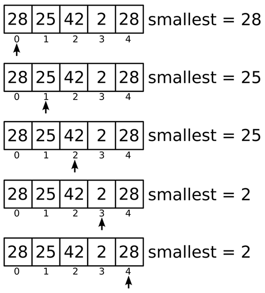

Prev - #11 Hours, Minutes, Seconds | Table of Contents | Next - #13 Sum & Product
getSmallest([28, 25, 42, 2, 28]) → 2
Python’s built-in min() and max() functions return the smallest and biggest numbers in
a list of numbers passed, respectively. In this exercise, you’ll reimplement
the behavior of these functions.
This is the sort of problem that is trivial for a human to solve by hand if the list of numbers is short. However, if the list contains thousands, millions, or billions of numbers, you’ll need to program a computer to perform the calculation.
Exercise Description
Write a getSmallest() function that
has a numbers parameter. The numbers
parameter will be a list of integer and floating-point number values. The
function returns the smallest value in the list. If the list is empty, the
function should return None. Since this function
replicates Python’s min() function, your solution
shouldn’t use it.
These Python assert statements stop
the program if their condition is False. Copy them
to the bottom of your solution program. Your solution is correct if the following
assert statements’ conditions are all True:
assert getSmallest([1, 2, 3]) == 1
assert getSmallest([3, 2, 1]) == 1
assert getSmallest([28, 25, 42, 2, 28]) == 2
assert getSmallest([1]) == 1
assert getSmallest([]) == None
Try to write a solution based on the information in this description. If you still have trouble solving this exercise, read the Solution Design and Special Cases and Gotchas sections for additional hints.
When you are done with this exercise, write a getBiggest() function which returns the biggest number instead of the smallest number.
Prerequisite concepts: len(), for loops, lists, None value
Solution Design
Think about how you would solve this problem without a computer,
given a list of numbers written on paper. You would use the first number as the
smallest number, and then read every number after it. If the next number is
smallest than the smallest number you’ve seen so far, it becomes the new
smallest number. Let’s look at a small example. Figure 12-1 shows how looping
over the list [28, 25, 42, 2, 28] would affect the
contents of a variable named smallest that tracks
the smallest number seen so far.

Figure 12-1: The value in smallest contains the smallest integer
found so far as the for loop
iterates over the list [28, 25, 42, 2, 28].
Creates a variable named smallest to
track the smallest value found so far and set it to the first value in the list
to start. Then have a for loop that loops over every
number in the list from left to right, and if the number is less than the
current value in smallest, it becomes the new value
in smallest. After the loop finishes, the function
returns the smallest value.
Special Cases and Gotchas
The function should first check if the list is empty. In that
case, return None. And by starting the smallest variable to the first number in a non-empty numbers list, you can guarantee that smallest
is always initialized to a value from the list.
Now try to write a solution based on the information in the previous sections. If you still have trouble solving this exercise, read the Solution Template section for additional hints.
Solution Template
Try to first write a solution from scratch. But if you have difficulty, you can use the following partial program as a starting place. Copy the following code from https://invpy.com/smallest-template.py and paste it into your code editor. Replace the underscores with code to make a working program:
def getSmallest(numbers):
# If the numbers list is empty, return None:
if len(____) == ____:
return None
# Create a variable that tracks the smallest value so far, and start
# it off a the first value in the list:
smallest = numbers[____]
# Loop over each number in the numbers list:
for number in ____:
# If the number is smaller than the current smallest value, make
# it the new smallest value:
if ____ < smallest:
____ = number
# Return the smallest value found:
____ smallest
The complete solution for this exercise is given in Appendix A and https://invpy.com/smallest.py. You can view each step of this program as it runs under a debugger at https://invpy.com/smallest-debug/.
Further Reading
The benefit of writing a computer program to do a simple task
like finding the smallest number in a list is that a computer can process a
list of millions of numbers in seconds. We can simulate this by having the
computer generate one million random numbers in a list, and then pass that list
to our getSmallest() function. On my computer, this
program takes a few seconds, and most of that time is spent displaying the
million numbers on the screen.
Write the following program and save it in a file named testsmallest.py. Run it from the same folder as your smallest.py file so that it can import it as a module:
import random, smallest
numbers = []
for i in range(1000000):
numbers.append(random.randint(1, 1000000000))
print('Numbers:', numbers)
print('Smallest number is', smallest.getSmallest(numbers))
When run, this program displays the million numbers between 1 and 1,000,000,000 it generated, along with the smallest number in that list.
Prev - #11 Hours, Minutes, Seconds | Table of Contents | Next - #13 Sum & Product